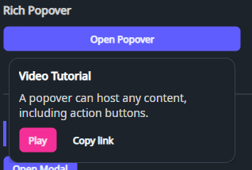

DaisyPopover is a lightweight popover control that hosts content inside a Popup anchored to a trigger. It's useful for rich tooltips, small forms, contextual menus, and “more actions” surfaces.
| Property | Description |
|---|---|
TriggerContent (object?) |
Content shown as the trigger (e.g. a button or icon). |
PopoverContent (object?) |
Content hosted inside the popup. |
IsOpen (bool) |
Controls whether the popover is open. |
PlacementMode (PlacementMode) |
Popup placement relative to the trigger (default Bottom). |
HorizontalOffset (double) |
Horizontal popup offset (default 0). |
VerticalOffset (double) |
Vertical popup offset (default 8). |
IsLightDismissEnabled (bool) |
Closes the popover when clicking outside (default true). |
MatchTargetWidth (bool) |
When true, the popup minimum width matches the trigger width (default false). |
ToggleOnClick (bool) |
When true, clicking the trigger toggles IsOpen (default true). |
<!-- Toggle popover on click -->
<controls:DaisyPopover>
<controls:DaisyPopover.TriggerContent>
<controls:DaisyButton Content="Open" Variant="Primary" />
</controls:DaisyPopover.TriggerContent>
<controls:DaisyPopover.PopoverContent>
<StackPanel Spacing="8" Width="240">
<TextBlock Text="Popover" FontWeight="SemiBold" />
<TextBlock Text="This content is hosted inside a Popup." Opacity="0.8" TextWrapping="Wrap" />
<controls:DaisyButton Content="Action" Size="Small" Variant="Secondary" />
</StackPanel>
</controls:DaisyPopover.PopoverContent>
</controls:DaisyPopover>
<!-- Programmatic control -->
<controls:DaisyPopover ToggleOnClick="False"
IsOpen="{Binding IsHelpOpen}"
MatchTargetWidth="True">
<controls:DaisyPopover.TriggerContent>
<controls:DaisyButton Content="Help" ButtonStyle="Outline" />
</controls:DaisyPopover.TriggerContent>
<controls:DaisyPopover.PopoverContent>
<TextBlock Text="Help content" />
</controls:DaisyPopover.PopoverContent>
</controls:DaisyPopover>MatchTargetWidth="True" for dropdown-like layouts where the popup should align with the trigger width.ToggleOnClick="False" when you want to fully control the open state via binding or code.DaisyDropdown can be a more specialized choice.